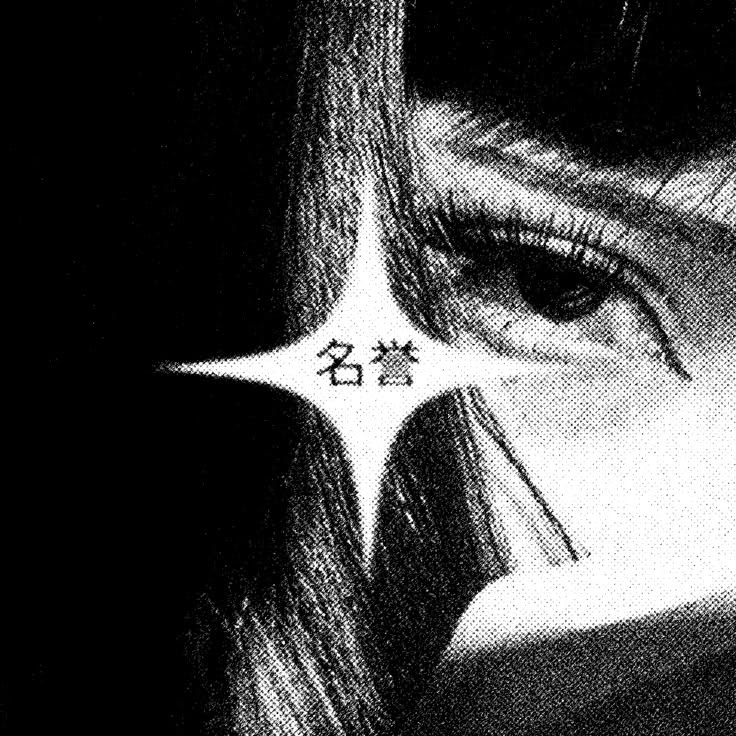

Proyecto de modelado y arte 3D desarrollado en Womp 3D. Una práctica centrada en la composición
estilizada, materiales orgánicos y experimentación visual en tiempo real.


Womp 3D
@minmin.zay

Mano Esculpida
@minmin.zay
Proyecto de modelado y escultura orgánica 3D desarrollado en Nomad Sculpt. Práctica centrada en la proporción anatómica de la mano y la definición de volúmenes mediante escultura digital.

Fakemon
@minmin.zay
Proyecto colaborativo de diseño y creación de criaturas originales en 3D, desarrollado mediante escultura digital y modelado en Nomad Sculpt y Autodesk Maya.